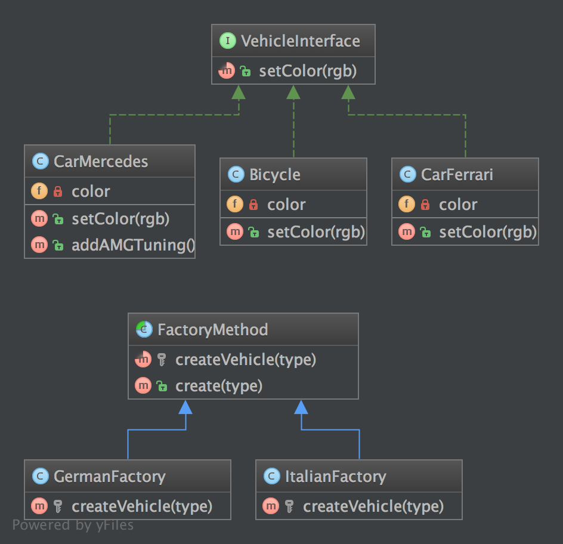

工厂方法模式（Factory Method）#
1. 目的#
对比简单工厂模式的优点是，您可以将其子类用不同的方法来创建一个对象。
举一个简单的例子，这个抽象类可能只是一个接口。
这种模式是「真正」的设计模式， 因为他实现了S.O.L.I.D原则中「D」的 「依赖倒置」。
这意味着工厂方法模式取决于抽象类，而不是具体的类。 这是与简单工厂模式和静态工厂模式相比的优势。
2. UML图#

3. 代码#
你可以在 GitHub 查看这段代码
FactoryMethod.php
<?php namespace DesignPatterns\Creational\FactoryMethod; abstract class FactoryMethod { const CHEAP = 'cheap'; const FAST = 'fast'; abstract protected function createVehicle(string $type): VehicleInterface; public function create(string $type): VehicleInterface { $obj = $this->createVehicle($type); $obj->setColor('black'); return $obj; } }
ItalianFactory.php
<?php namespace DesignPatterns\Creational\FactoryMethod; class ItalianFactory extends FactoryMethod { protected function createVehicle(string $type): VehicleInterface { switch ($type) { case parent::CHEAP: return new Bicycle(); case parent::FAST: return new CarFerrari(); default: throw new \InvalidArgumentException("$type is not a valid vehicle"); } } }
GermanFactory.php
<?php namespace DesignPatterns\Creational\FactoryMethod; class GermanFactory extends FactoryMethod { protected function createVehicle(string $type): VehicleInterface { switch ($type) { case parent::CHEAP: return new Bicycle(); case parent::FAST: $carMercedes = new CarMercedes(); // 我们可以从已知的的类中找到具体的交通工具 $carMercedes->addAMGTuning(); return $carMercedes; default: throw new \InvalidArgumentException("$type is not a valid vehicle"); } } }
VehicleInterface.php
<?php namespace DesignPatterns\Creational\FactoryMethod; interface VehicleInterface { public function setColor(string $rgb); }
CarMercedes.php
<?php namespace DesignPatterns\Creational\FactoryMethod; class CarMercedes implements VehicleInterface { /** * @var string */ private $color; public function setColor(string $rgb) { $this->color = $rgb; } public function addAMGTuning() { // 在这里做额外的调整 } }
CarFerrari.php
<?php namespace DesignPatterns\Creational\FactoryMethod; class CarFerrari implements VehicleInterface { /** * @var string */ private $color; public function setColor(string $rgb) { $this->color = $rgb; } }
Bicycle.php
<?php namespace DesignPatterns\Creational\FactoryMethod; class Bicycle implements VehicleInterface { /** * @var string */ private $color; public function setColor(string $rgb) { $this->color = $rgb; } }
4. 测试#
Tests/FactoryMethodTest.php
<?php namespace DesignPatterns\Creational\FactoryMethod\Tests; use DesignPatterns\Creational\FactoryMethod\Bicycle; use DesignPatterns\Creational\FactoryMethod\CarFerrari; use DesignPatterns\Creational\FactoryMethod\CarMercedes; use DesignPatterns\Creational\FactoryMethod\FactoryMethod; use DesignPatterns\Creational\FactoryMethod\GermanFactory; use DesignPatterns\Creational\FactoryMethod\ItalianFactory; use PHPUnit\Framework\TestCase; class FactoryMethodTest extends TestCase { public function testCanCreateCheapVehicleInGermany() { $factory = new GermanFactory(); $result = $factory->create(FactoryMethod::CHEAP); $this->assertInstanceOf(Bicycle::class, $result); } public function testCanCreateFastVehicleInGermany() { $factory = new GermanFactory(); $result = $factory->create(FactoryMethod::FAST); $this->assertInstanceOf(CarMercedes::class, $result); } public function testCanCreateCheapVehicleInItaly() { $factory = new ItalianFactory(); $result = $factory->create(FactoryMethod::CHEAP); $this->assertInstanceOf(Bicycle::class, $result); } public function testCanCreateFastVehicleInItaly() { $factory = new ItalianFactory(); $result = $factory->create(FactoryMethod::FAST); $this->assertInstanceOf(CarFerrari::class, $result); } /** * @expectedException \InvalidArgumentException * @expectedExceptionMessage spaceship is not a valid vehicle */ public function testUnknownType() { (new ItalianFactory())->create('spaceship'); } }
原文：